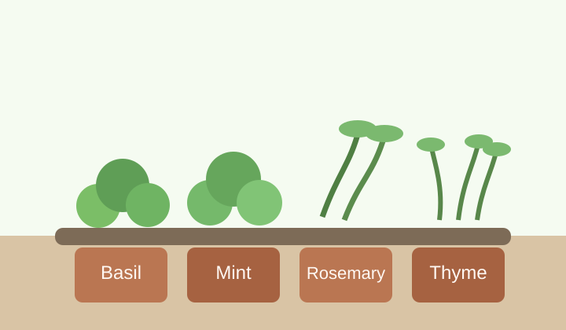

Choose Herbs That Match Real Conditions

Herbs make excellent balcony plants because they offer strong fragrance, useful harvests, and compact growth habits. Basil, parsley, chives, thyme, and mint can all perform well in containers when given the right amount of sun and moisture. A beginner should not try to grow every herb at once. A smaller collection is easier to monitor, and it quickly teaches the differences between thirsty herbs and drought-tolerant ones.
Container size has a direct effect on plant health. Tiny decorative pots dry out too quickly during warm weather, while deeper pots give roots more room and reduce watering stress. A smart herb setup often combines several medium containers rather than one crowded planter. That approach makes it easier to rotate plants, trim growth, and replace a struggling herb without disturbing the whole arrangement.
Harvesting is part of care, not just a reward at the end. Regular trimming encourages many herbs to branch out and stay productive for a longer time. Gardeners should avoid stripping a plant bare in one session. Light, repeated harvests are better for the plant and create a more sustainable supply for cooking.
Simple Care Checklist
New gardeners often feel more confident when they can follow a clear weekly routine. The list below keeps herb care manageable and helps prevent the most common mistakes, such as overwatering or failing to prune at the right time.
- Check soil moisture with a finger before watering.
- Rotate pots every few days so stems grow evenly toward the sun.
- Trim leaves regularly to encourage fresh growth.
- Remove yellow leaves before they attract pests or mold.
Many herbs also benefit from occasional feeding during active growth, especially if they are watered frequently. A balanced fertilizer applied carefully can restore nutrients that wash out of container soil over time. However, too much fertilizer can reduce flavor, so moderation matters.
If you want more ideas for designing the entire space, return to the Home page. If you want to build a balcony that also supports bees and butterflies, continue to the Pollinators page.
Image citation: Original illustration created by Codex for this student project, 2026.